Precision Positioning
Updated 02.05.2024
Glossary
| Term | Description |
|---|---|
| Navitrol | Navigation software for an individual vehicle. |
| NavitrolMonitor | Monitoring software for the Navitrol positioning software running an on individual vehicle. |
| NavithorTools | Software for creating and editing environment and routes for the Navitrol navigation software. |
| Navigation point | Centre point of the vehicle's coordinate system which is used as a reference for all other dimensions. |
Introduction
Precision positioning is a Navitrol feature unlockable by additional licensing and parameters. Precision positioning uses a different kind of positioning algorithm that allows the user to select which environment points should be used for navigation when more precise positioning is required and also uses these points in a way that increases positioning accuracy. In normal positioning, every generated environment point is used at all times.
Most common use cases for the feature are cases when docking to a station needs to be done only with the static features of the station itself since these features are more reliable for navigation than points seen at a larger distance. However, precision positioning can also be applied to driving through environment normally if more precision is needed in specific areas.
Precision positioning can be applied to every kind of vehicle to improve the positioning accuracy but the best results can be accomplished with having the navigation scanner(s) mounted symmetrically in relation to the navigation point of the vehicle.
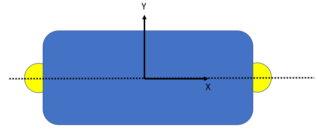
The best results have been achieved with the combination of having the scanners mounted symmetrically and performing the precision positioning with reflectors that are mounted symmetrically in relation to the driving axle of the vehicle.
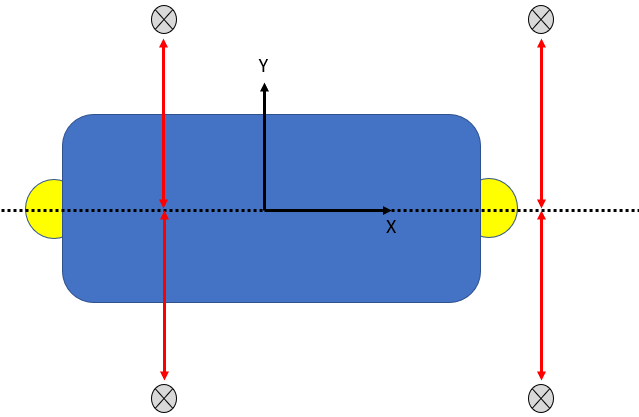
Relevant parameters
| Parameters | Description |
|---|---|
| I,precision_positioning_enable, | 0 to disable precision positioning areas, 1 to enable; min 0, max 1 |
| I,precision_positioning_in_pos_init_enabled, | 0 to disable precision positioning areas when initializing position and use the whole environment, 1 to enable; min 0, max 1 |
| F,precision_map_max_dist_m, | Maximum distance offset of the vehicle navigation point in meters when driving into or out of a precision positioning area and switching from positioning between only the environment within the area and the environment outside of it. Recommended start value 0.2. |
| F,precision_map_max_hdiff_deg, | Maximum heading offset of the vehicle in degrees when driving into or out of a precision positioning area and switching from positioning between only the environment within the area and the environment outside of it. Recommended start value 30. |
| F,precision_min_point_dist, | Minimum distance in meters between precision positioning points generated from the environment within the precision positioning area. Recommended start value 0.02. |
| I,precision_reflectors_only, | 1 to only use reflectors within precision positioning areas, 0 to use environment point too; min 0, max 1 |
| F,precision_ref_conf_multiplier, | Multiplier for position confidence gained by detected reflectors. Recommended start value 2. |
| F,precision_large_xy | If the xy-correction residual (|detected correction xy -- loc_xy_max_corr|) is larger than this value the maximum xy-correction is limited to precision_xy_corr_large, otherwise it is limited to precision_xy_corr_small. Valid inside the precision positioning zones. |
| F,precision_xy_corr_large | Threshold for the xy-corrections inside the precision positioning zones. See explanation for precision_large_xy. |
| F,precision_xy_corr_small | Threshold for the xy-corrections inside the precision positioning zones. See explanation for precision_large_xy. |
| F,precision_large_h | If the h-correction residual (|detected correction h -- loc_h_max_corr|) is larger than this value the maximum h-correction is limited to precision_h_corr_large**, otherwise it is limited to precision_h_corr_small. Valid inside the precision positioning zones. |
| F,precision_h_corr_large | Threshold for the h-corrections inside the precision positioning zones. See explanation for precision_large_h. |
| F,precision_h_corr_small | Threshold for the h-corrections inside the precision positioning zones. See explanation for precision_large_h. |
| F,precision_ref_mac_dist_err | Maximum position error [m] for the reflector to be considered. Replaces corr_ref_max_dist_err inside the precision positioning zone. |
| F,precision_ref_max_ang_err_deg | Maximum angular error [deg] for the reflector to be considered. Replaces corr_ref_max_ang_err_deg inside the precision positioning zone. |
Other parameters are recommended to be kept in their default values unless recommended otherwise by Navitec Systems.
Setting up a precision positioning area
Creating the environment
Precision positioning can be used with any environment points but to reach the most accurate results, it is recommended that a separate teach file is made where the vehicle is driven through the elements designed to be used as environment for the positioning. The environment points should then be generated from the measurements from this teach file, where all of the measurements are from a situation simulating the real use case. This way it can be verified that the environment is seen in the same way when teaching it and when navigating with it autonomously.
Match the new teach file to the original environment.
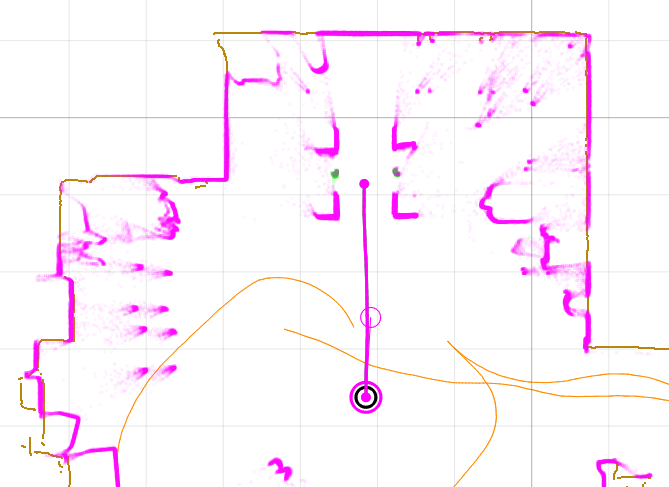
Figure 1. Additional precision positioning area teach file matched to the original environment.
Follow the regular procedure for creating an environment that is explained in the Navithor Tools user guide document and generate the environment designed to be used for the precision positioning.
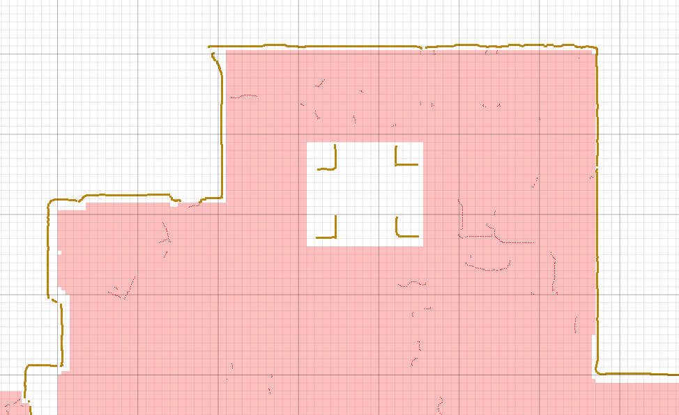
Figure 2. New environment points generated from the precision positioning teach file.
If reflectors are to be used for precision positioning, they also have to be generated according to the normal procedure.
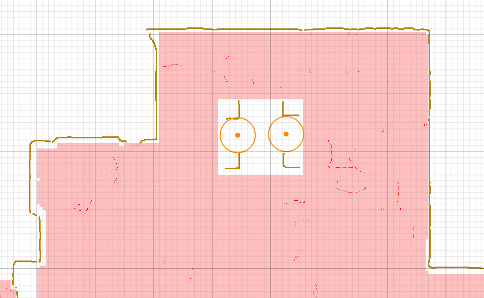
Figure 3. Reflectors generated.
Creating the precision positioning area
For activating the precision positioning algorithm, a precision positioning area has to be defined in Navithor Tools. Precision positioning will only activate within this zone and will only use environment points defined inside this zone for navigation.
An area polygon can be defined in Navithor Tools from Zones/Zones, by setting the Zone Type "Precision positioning zone"
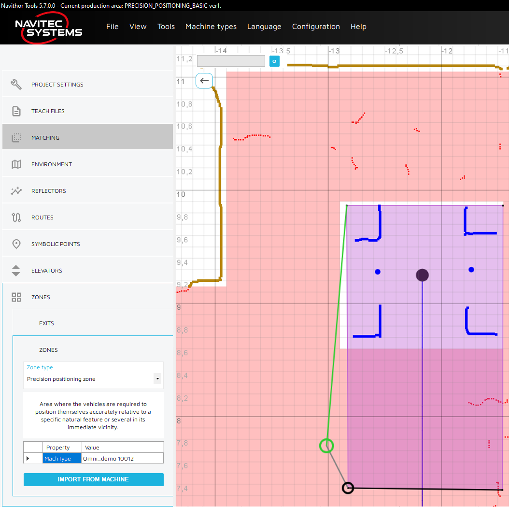
Figure 4. Creating a precision positioning area.
If there are other routes inside the precision positioning area, where precision positioning is not needed, there is also an option to define angle limits for the vehicle heading that activate the precision positioning. The angle limits can be altered in Navithor Tools from Environment Precision positioning Edit angles.
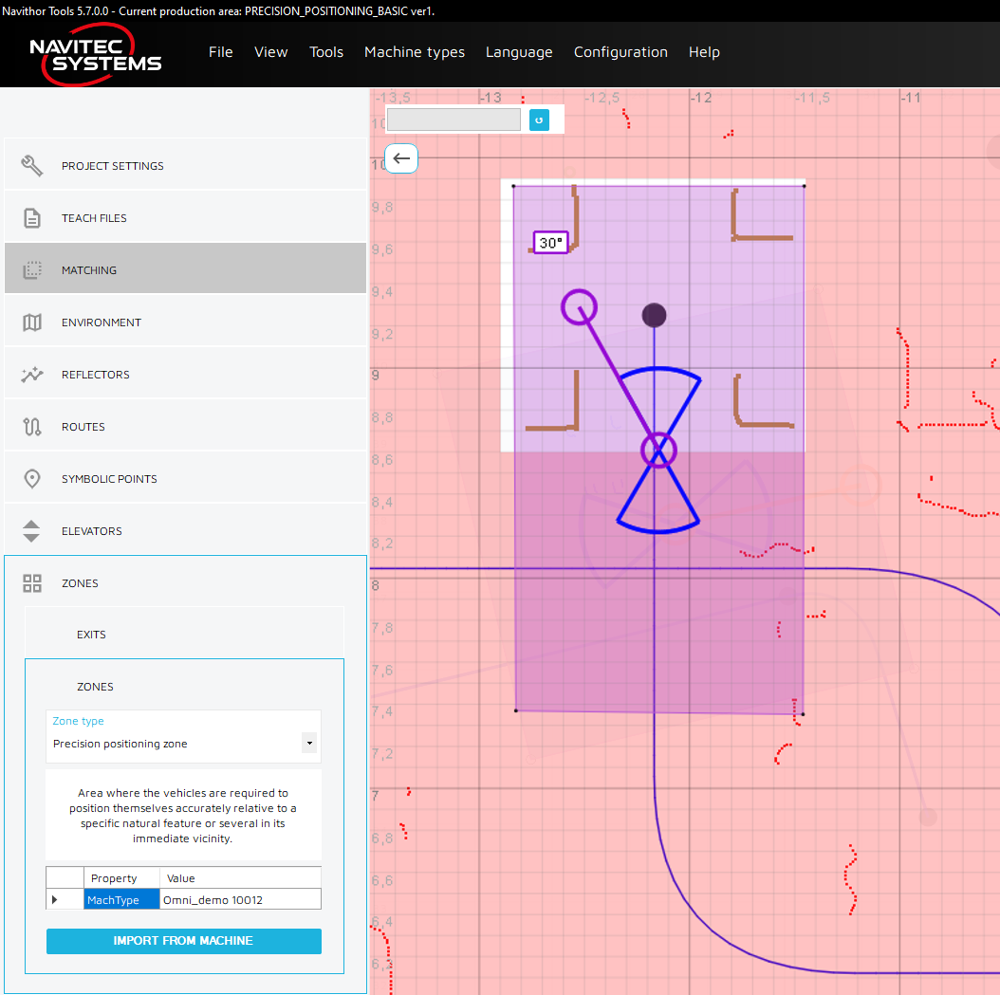
Figure 5. A precision positioning area that will only be triggered when the heading is within 30° of the route heading causing the precision positioning algorithm to only be triggered when driving the route leading inside the docking area.
The heading of the angle limitation can be changed by changing to the heading alteration view by clicking the centre point of the figure. The heading can then be changed by dragging the orange handle of the figure.
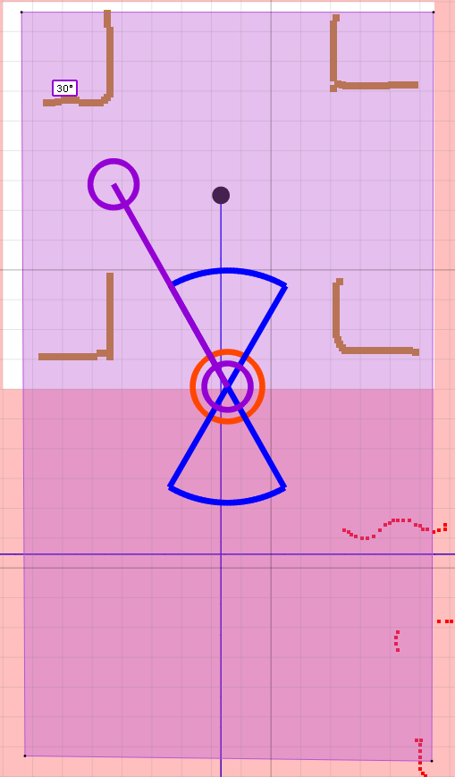 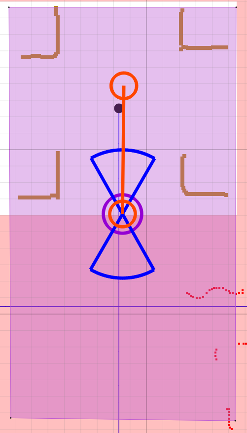 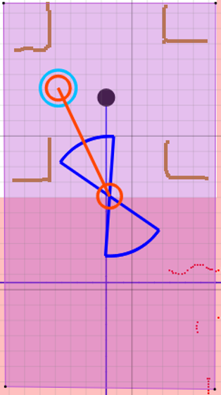
Figures 6, 7 & 8. Switching between the heading alteration view and the angle limit alteration view and changing the heading.
The angle limitation can be altered by dragging the purple handle while in the angle alteration view. If the handle is dragged to create a full circle, there are no angle limitations.
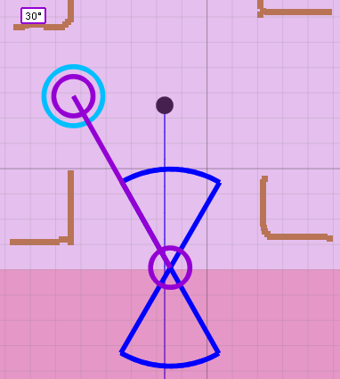 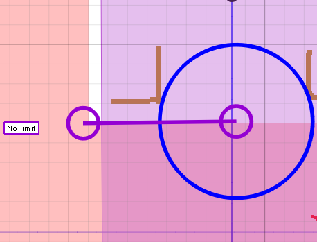
Figures 9 & 10. Changing the angle limit from 30° to no angle limitations.
When the environment with the precision positioning area is uploaded to the vehicle, if there are reflectors within the defined area, Navithor Tools will ask whether the reflectors should be used for navigation only within the precision positioning are or outside of it too.
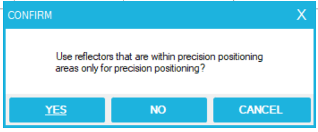
Figure 11. Message box that appears when there are reflectors inside the precision positioning area.
Using precision positioning
The precision positioning areas are shown in Navitrol Monitor as light-yellow areas when they are not active and yellow when active.
The conditions for activating the precision positioning area are
-
Vehicles navigation point is within the precision positioning area
-
The heading of the vehicle is within the limits defined for the precision positioning area.
When the precision positioning area is active, only the environment points and the reflectors within the area are used for positioning to increase accuracy.
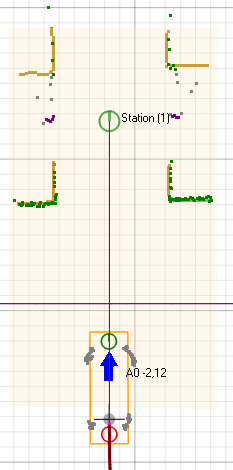 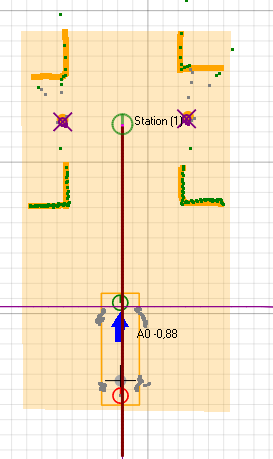
Figures 12 & 13. Precision positioning area activates when the vehicles navigation point is driven within the area.
When the area is uploaded to Navitrol, Navithor Tools asks if reflectors within the precision positioning area are to be used for navigation only within the area or everywhere. Depending on the selection here, the reflectors are detected also outside of the area or igrored.
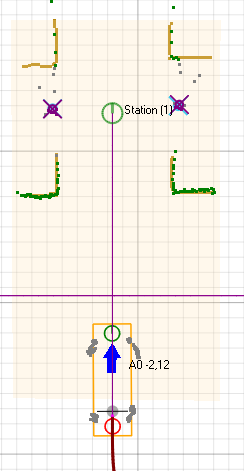
Figures 14 & 15. Reflectors within the precision positioning area enabled and disabled outside the area.
Troubleshooting
Large position corrections on the edge of the precision positioning area:
-
Check that is the environment within the precision positioning area matched to the other environment properly.
-
If there is an offset between the environment inside the area and outside of it the target position of the vehicle will jump by the distance of the offset when entering or exiting the area.
Precision positioning area not activating when driving into the area:
-
Check that the precision positioning areas are enabled with the following parameter I,precision_positioning_enable, 1
-
Check that the heading of the vehicle on the route that is going into the precision positioning area is allowed with the heading limitation feature for the area in Navithor Tools.
Navitrol prompts ERROR_LICENSE_OPTION_MISSING when the precision positioning is enabled:
-
The licensekey inside the IPC does not include the license option for this feature.
-
Contact Navitec Systems to get a license for precision positioning.
Vehicle is driving inaccurately inside the precision positioning area:
-
Check that the environment within the precision positioning area is seen by the scanners similarly as it has been defined in Navithor Tools.
-
If there is error in the environment points in relation to the scanner views, run a a new teach file or if possible, try matching the current teach file properly.